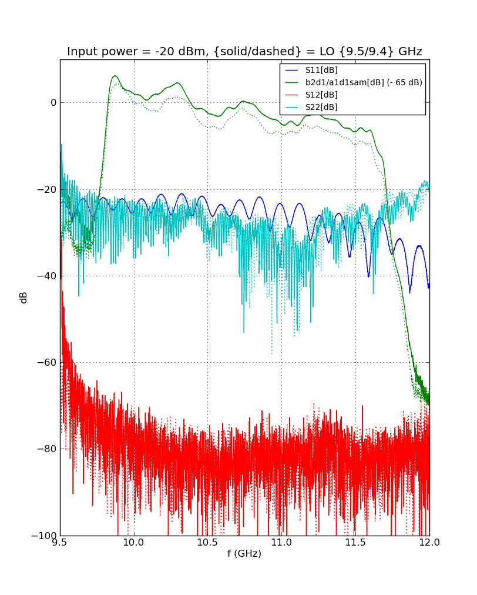
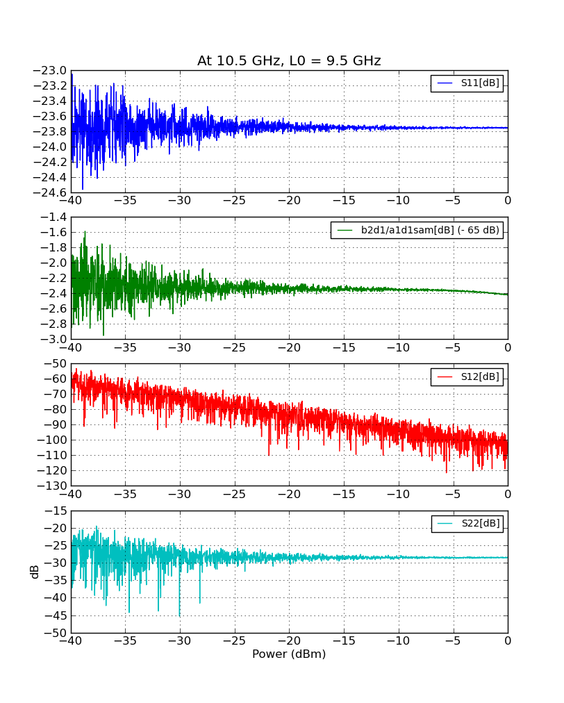

August 3, 2016 - S parameters
Christopher D. Sheehy
Intro
I present VNA measurements without the horn.
Method
With the setup exactly the same as in the cold load setupt
from this posting, I attach port 1 of
the VNA to 3 x 20 dB attenuators attached to the LNA input. This is needed
because the VNA does not output less than -42 dBm. S21 for the combined
attenuators show a flat -65 dB of attenuation across 9-12 GHz. I attach port 2
of the VNA to the end of the long coax + -6 dB attenuator. I sweep in frequency
at -20 dBm output power with 2 different LO frequencies. I then seep in power at
10.5 GHz with the LO at 9.5 GHz. In the previous posting (see end of raw notes),
we wanted to show linearity up to -75 dBm input power, which is -10 dBm with the
attenuators.
Results
The VNA is in scalar mixer mode, so the quantity b2/a1 is what is plotted, in
keeping with the manual's suggestion. This is basically the same as S21 (and
looks the same on the VNA, except S21 is noisier).
| Fig. 1 - |
Figure title |
|---|
| a. label a |
b. label b |
| |
 |
 |
|
Conclusions
We see changes in S21 due to the LO frequency. This is because standing waves in
the LO cable change the power the mixer sees as a function of frequency. I have
verified that the gain fluctuates up and down by about this much when scanning
over more finely spaced LO frequencies. (If the cable is longer or there are
more junctions, standing waves reduce the LO power at the mixer to as low as -6
dBm in places, making the system gain drop to zero. This is now fixed.)
There is good linearity up to -10 dBm, so we should be good. I would have
wished that S11 were smaller, but it looks very independent of power and so
should cancel out with proper calibration.
I would like to come up with a way to measure these parameters with the horn
in place now.
{kind=link}
{kind=link}